517 fotoğraf · 22 albüm
Fotoğraf Galerisi
Koordinasyon toplantıları, sempozyumlar, jüriler ve sosyal programlardan kareler.
Koordinasyon-01 Ankara 2007
Koordinasyon-02 Elazığ 2010
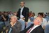
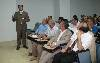
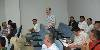
Oturumlar
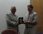
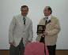
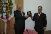
Alevilik Paneli
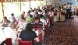
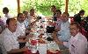
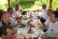
Sosyal Program
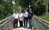
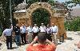
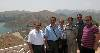
Hatıralar
Koordinasyon-03 Isparta 2012
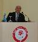
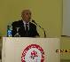
Açılış konuşmaları
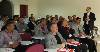
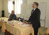
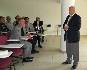
Oturumlar
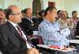
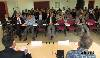
İzleyiciler
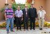
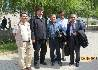
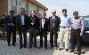
Toplu Resimler
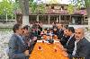
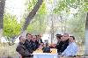
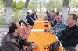
Sosyal Program
Koordinasyon-04 Çorum 2013
2003 Metot İSAM
2011 et-Tanci Sempozyumu Ankara
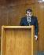
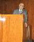
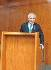
Açılış Konuşmaları
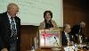
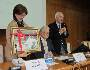
Oturumlar
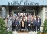
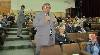
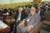
İzleyiciler ve Toplu Foto
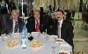
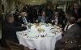
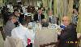
Sosyal Program
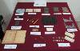
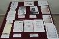
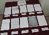